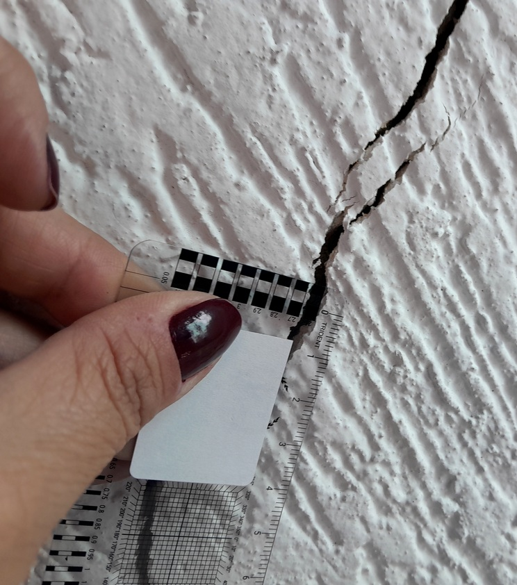
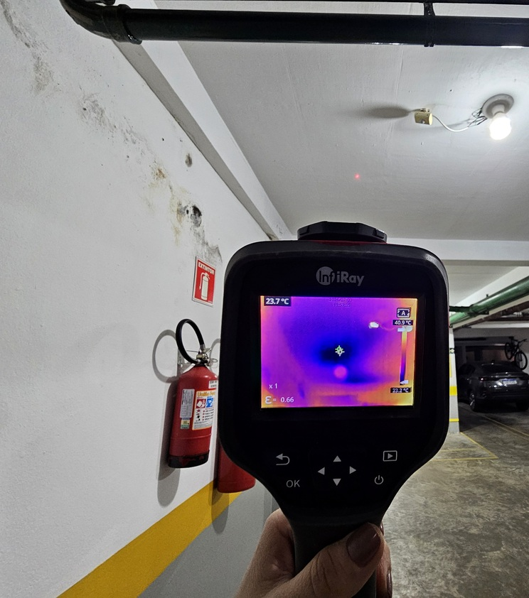
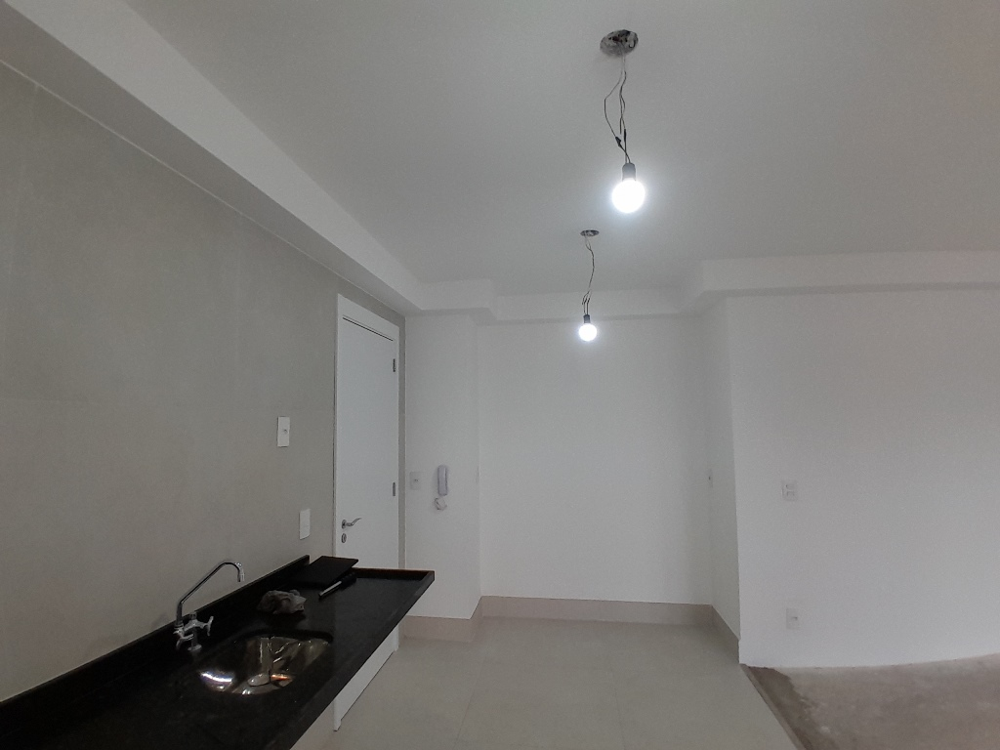

Condomínios
Inspeções, diagnósticos, recebimento de áreas comuns, análise de garantias e suporte técnico em conflitos construtivos.
Conheça Nossos Serviços
Inspeções, perícias e análises técnicas para
identificar problemas, compreender suas causas
e orientar os próximos passos.
Mais segurança
nas suas decisões.
Análises fundamentadas em normas e critérios técnicos.
Atendimento a
pessoas físicas e jurídicas.
Nossos Serviços:
Avaliação técnica do imóvel para identificação de anomalias e condições de conservação.
Imóveis · Condomínios · Reformas · Estruturas · Fachadas

Olhar técnico
para mais
tranquilidade
Avaliação das condições da edificação para identificar falhas, anomalias e sinais de degradação, considerando os sistemas construtivos e, quando aplicável, documentos e normas técnicas.
Na compra ou entrega de imóveis, antes ou após reformas ou ao identificar trincas, infiltrações, desprendimentos e outras manifestações anômalas.
Relatório ou laudo técnico com registros fotográficos, anomalias identificadas e orientações técnicas, conforme o escopo contratado.
Investigação das causas e mecanismos relacionados às manifestações patológicas da edificação.
Umidade e infiltrações · Fissuras e trincas · Estruturas · Fachadas · Impermeabilização
Investigação técnica para identificar as possíveis causas de infiltrações, umidade, fissuras, trincas, destacamentos e outras anomalias, podendo incluir ensaios específicos.
Quando o problema é recorrente, reparos anteriores não funcionaram ou é necessário compreender sua origem antes de intervir.
Laudo técnico com caracterização das manifestações, análise das possíveis causas, registros dos ensaios e conclusões da investigação.

Entender a origem.
Orientar a solução.
Verificação técnica de unidades e áreas comuns antes ou durante o recebimento do empreendimento.
Unidades privativas · Áreas comuns · Acabamentos · Instalações · Sistemas construtivos

Mais segurança
em cada entrega.
Vistoria destinada a identificar falhas aparentes, não conformidades e divergências em relação aos documentos técnicos e itens contratados.
Antes da entrega das chaves, no recebimento de unidades novas, áreas comuns ou durante o período de garantia.
Relatório técnico com registros fotográficos, itens vistoriados e apontamentos das não conformidades identificadas.
Atuação técnica em demandas judiciais e extrajudiciais relacionadas à engenharia civil.
Vícios construtivos · Danos a imóveis · Reformas · Infiltrações · Estruturas · Divergências técnicas
Análise técnica de questões envolvendo vícios construtivos, danos, falhas de execução, reformas, infiltrações, estruturas e outros conflitos técnicos.
Em processos judiciais, perícias, conflitos técnicos ou situações que exijam fundamentação especializada em engenharia.
Análise documental e técnica, acompanhamento de perícias e elaboração de pareceres, quesitos e manifestações técnicas, conforme o escopo contratado.

Clareza técnica
para decisões
fundamentadas.
Método e investigação
Cada demanda é analisada de forma individual, considerando as características da edificação, o histórico da ocorrência e o objetivo da contratação.
Compreensão do problema, objetivo da contratação e documentação disponível.
Avaliação em campo, registros e ensaios conforme a necessidade de cada caso.
Interpretação das evidências, documentos, projetos, normas e demais elementos aplicáveis.
Consolidação dos resultados em relatório, laudo, parecer ou manifestação técnica.
Contextos de atuação
Inspeções, diagnósticos, recebimento de áreas comuns, análise de garantias e suporte técnico em conflitos construtivos.
Inspeções, vistorias, recebimento de obras, análises técnicas e suporte especializado.
Avaliação de imóveis, patologias construtivas, reformas, recebimento de unidades e conflitos técnicos.
Critério em cada análise
A análise técnica é desenvolvida a partir das condições observadas, registros de campo, documentação disponível e critérios técnicos aplicáveis a cada situação.
Aplicações dos serviços
Sobre a contratação
O documento emitido depende do objetivo e do escopo da contratação. O serviço pode resultar em relatório, laudo, parecer ou manifestação técnica.
Sim. Quando necessários à investigação, podem ser empregados ensaios e instrumentos específicos, definidos conforme as características da ocorrência.
Projetos, memoriais, manuais, registros de manutenção, documentos de reforma e outros elementos podem contribuir para a análise, conforme o tipo de serviço.
Sim. A atuação contempla condomínios, construtoras, incorporadoras, proprietários e unidades privativas, conforme a natureza da demanda.
Quando a demanda estiver relacionada a processo judicial ou conflito técnico, o escopo deve ser definido especificamente para essa finalidade.
Segurança para decidir